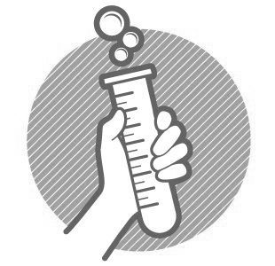
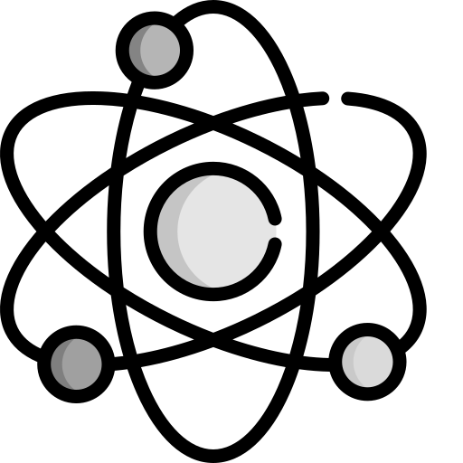

{% extends "cientificos.html" %}
{% block estilo %}
{% endblock %}
{% block logo %}

{% endblock %}
{% block menu %}
{% endblock %}
{% block cuerpo %}
{% block biografia %}
{{ parent() }}
{% endblock %}
{% endblock %}
{% block logo_cientificos %}

{% endblock %}